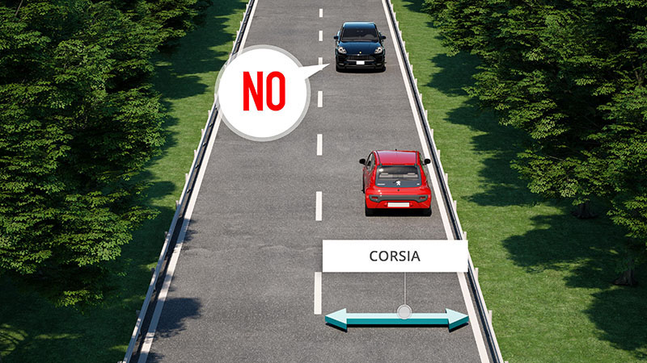

La corsia

La corsia è una parte della carreggiata che consente la circolazione di una sola fila di veicoli. E' limitata da strisce continue o discontinue e ha larghezza minima di 2,80 metri e massima di 4 metri.
Una corsia è sempre a senso unico e può essere:
Nella corsia di accelerazione e decelerazione sono vietati la sosta ed il sorpasso.
Le corsie possono essere vietate a alcuni tipi di veicoli.
L'ente proprietario della strada può imporre che su una corsia i veicoli transitino ad una velocità minima obbligatoria.
Non è vero che possono circolare affiancati due motocicli o due ciclomotori e che i pedoni non possono mai attraversarla.
Una corsia è sempre a senso unico e può essere:
- di marcia: per la marcia dei veicoli
- di accelerazione: per consentire l'ingresso dei veicoli nella carreggiata, ad esempio quando si proviene da un'altra strada o da un'area di servizio (in autostrada o su strade extraurbane principali)
- di decelerazione: per consentire il rallentamento dei veicoli in uscita dalla carreggiata, da una strada a precedenza o entrando in un'area di servizio in autostrada
- di emergenza: per la sosta di emergenza in caso di guasto o malessere
- riservata: destinata esclusivamente alla circolazione di una particolare categoria di veicoli (esempio taxi o autobus)
- specializzata: destinata a determinate manovre (esempio sorpasso, sosta, svolta)
Nella corsia di accelerazione e decelerazione sono vietati la sosta ed il sorpasso.
Le corsie possono essere vietate a alcuni tipi di veicoli.
L'ente proprietario della strada può imporre che su una corsia i veicoli transitino ad una velocità minima obbligatoria.
Non è vero che possono circolare affiancati due motocicli o due ciclomotori e che i pedoni non possono mai attraversarla.